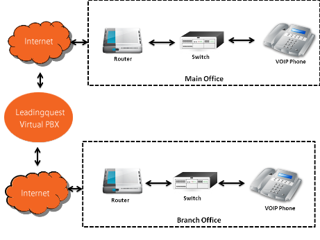

The Customized Global M2M Solution
The Customized Global M2M Solution
Parlacom offers Virtual PBX phone systems to keep things simple, even for large businesses. With no complex hardware, it's easy to manage your phone system from our web-based portal. You can access your phone system anywhere as long as you have access to a simple Internet connection. It's easy to use and makes your business look complex and professional to potential customers.

Retain More Callers
Are long wait times costing you valuable orders? Do your customers get frustrated while sitting on hold to ask simple questions? Datelo offers the perfect solution with customized music and messages on hold. You can select music or messages to play while your customers wait. This is the perfect opportunity to give basic information and answer frequently asked questions. You can announce new products or promote your services. If you prefer to have music playing on hold, set your system to interrupt the music at timed intervals with a reassuring voice giving updates on hold times. We provide default voice prompts for easy set up or your record a customized message to encourage your callers to stay on the line.
Let Your Automated Receptionist Direct Call Traffic Parlacom's virtual PBX system gives you the option to design an automated receptionist to answer calls and direct customers to the right extension. You can customize your auto attendant to give a custom greeting or select one of our professional defaults for fast set-up. Your automated receptionist can answer frequently asked questions or give directions to reach individual extensions. For example, your callers can hear, "Dial 1 for office hours. Dial 2 for billing. Dial 3 for customer support."
Create Extensions on Multiple Work Sites If your business is based in multiple departments or a wide span of locations, our Virtual PBX system will allow you to connect all of the individual factions into one centralized calling system. Set up extensions for each location and assign advanced voicemail and email options. You can customize each extension with unique music and messaging for hold times or set them to play announcements. Adding and deleting extensions is easy through our web-based portal so you can make changes with the click of a mouse.
Create the Appearance of a Sophistical Corporation Even if you are an upcoming business with only a few employees, our Virtual PBX system can create the appearance of a large, sophisticated operation. You can create unlimited extensions for multiple departments, regardless of how many actual employees you plan to hire. If you are competing with large businesses employing hundreds of customer support representatives, the Virtual PBX system can create the illusion that even a two or three person staff is just as complex and sophisticated.
Parlacom offers a Virtual Call Center that is easy, fast, and affordable. Our cloud-based technology makes it easy to link multiple work sites through one unified calling system without expensive equipment or complicated software. When you want to take your business to the next level, transfer your incoming calls to a virtual call center and let our technology do the work for you.
Automatically Route Calls to the Appropriate Extension Parlacom makes it simple to deploy calls to the right employees without requiring customers to call a second number. The automated phone attendant will connect callers to the appropriate extension based on the options you select during set-up. Add unlimited extensions and have them patched through to any number so you can continue to work at home, on the road, or during travel. You can always add extensions as your company grows so there is unlimited potential for your business to expand.
Equip Agents With Instant Caller Information When employees answer an incoming call, your virtual call center can automatically provide them with relevant information about the caller. This makes it simple to insure quality customer service across multiple extensions and insure optimal customer satisfaction.
Retain Callers With Customized Hold Messages Customers become easily frustrated if they have to wait on hold for a long period of time. You can reduce hang-ups and retain your callers by setting up customized hold messages. Play announcements about new products or answer common questions. Provide directions to a nearby business location or give a website address where customers can get more information or place orders online. Set up a priority queue to insure that the most important callers get first place inline.
Create an Automated Help Desk If you receive a lot of calls about the same technical support issues, an automated help desk is the perfect solution. Set up your virtual phone center to walk your customers through steps to troubleshoot common issues before transferring them to a live representative. This can drastically reduce unnecessary call volume and decrease operating costs for customer service departments.
Set-Up is Easy! There is no need to wait weeks or months for a technical specialist to design your virtual call system. Our web-based platform allows you to set up your virtual call center in just minutes.
© 2013 Parlacom, All Rights Reserved


 English
English Português
Português